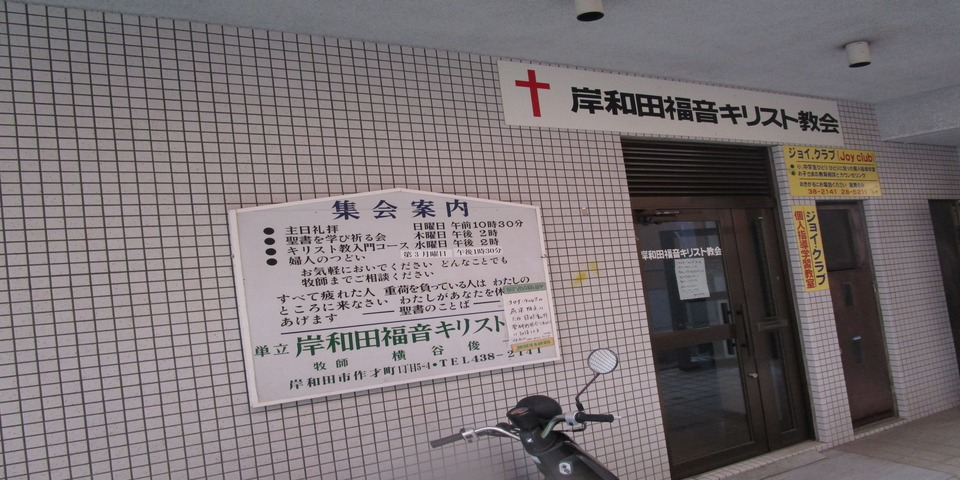

コロナウイルスの感染防止のため、日曜礼拝・聖研祈祷会(木曜日)はお休みします。
お問い合わせ 090-8142-9685
ここから～～～～～～～～～～～～～～～～～～～～～～～～～～～～～～～～～～～～～～～～～～～～～～～～～～～～～～～～～～～～～～～～～～～～～～～～～～～～～～～～～～～～～～～～～～～～～～～～～～～～～～～～～～～～～～～～～～～～～～～～～～～～ここまで
岸和田福音キリスト教会 牧師
横谷 俊一
集会案内
| 主日礼拝 | 日曜日・午前１０時３０分 |
|---|---|
| 聖書を学び祈る会 | 木曜日・午後２時 |
| キリスト教入門コース | 水曜日・午後２時 |
| 婦人のつどい | 第３月曜日・午後１時３０分 |